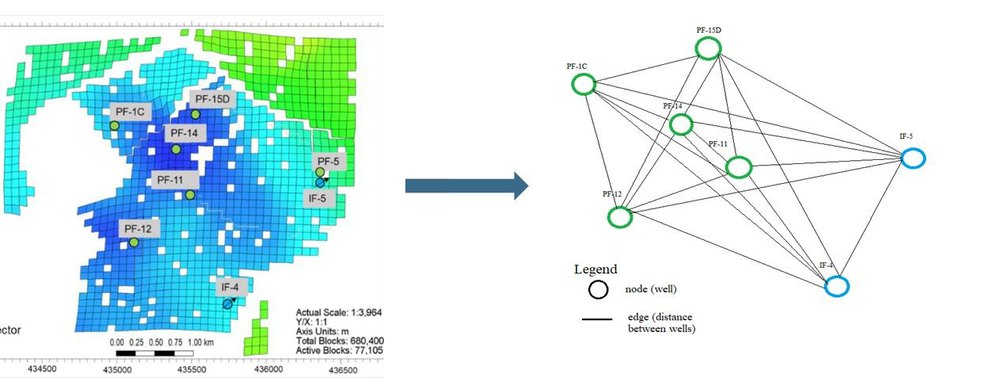
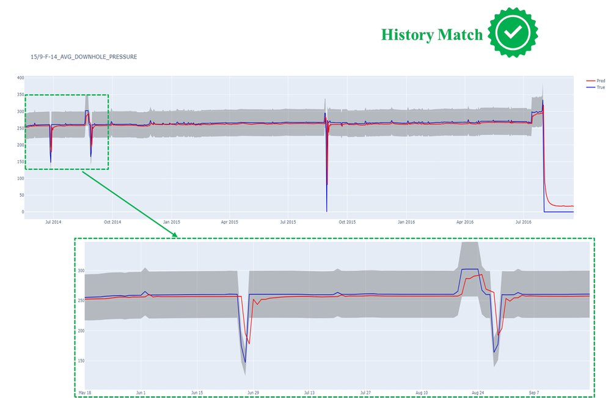
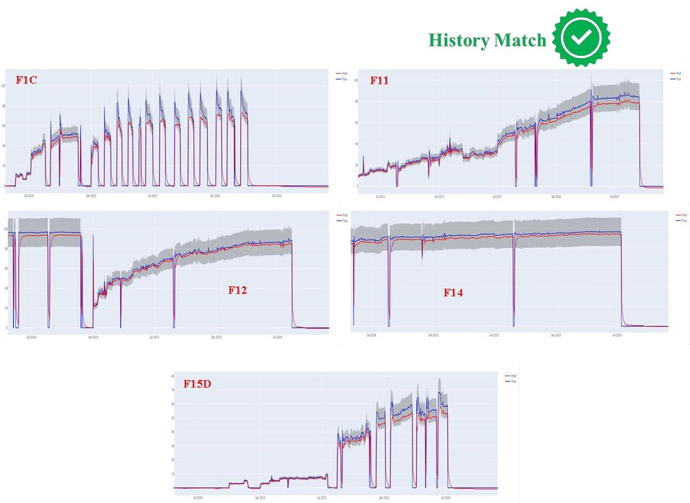
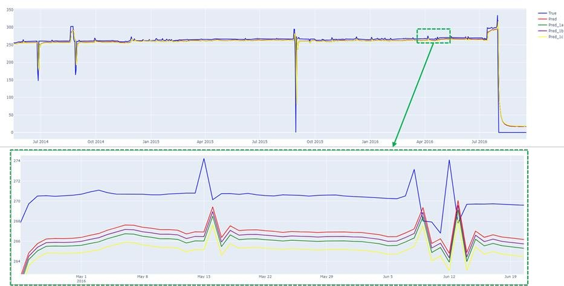
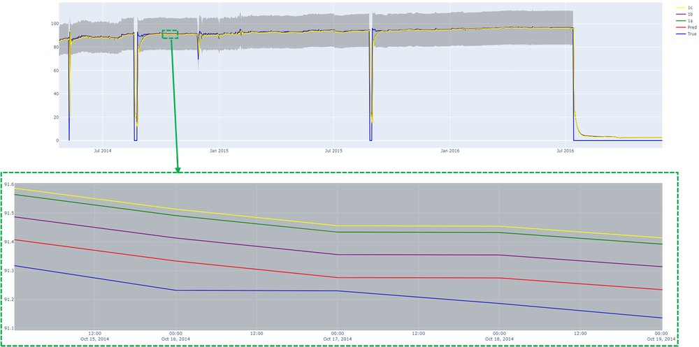

Forecasting a whole oilfield with a graph neural network
New to me: graph neural networks · First result: 2–3 weeks · Whole study: 2 months, a history match and what-if tests on 7 wells
I built a graph neural network and LSTM model that treats an oilfield as a network of wells, and tested it on the public Volve field. It matched the field’s history for pressure and water cut, but its responses to controlled changes in injection and production were not physically consistent.
- Data
- Volve field, 7 wells: 5 producers, 2 injectors
- Model
- Graph convolution + LSTM
- Targets
- Bottom-hole pressure, water cut
- Outcome
- History match: yes. What-if: no
Context
Reservoir simulators predict how a field will produce, but running a numerical model takes time. Consultants work under strict deadlines, so data-driven alternatives are attractive. I tested one on the Volve oilfield in the Norwegian North Sea, whose data is publicly available. The field was discovered in 1993 and produced for eight years from 2008. Of the 16 wells drilled, including producers, water injectors and one gas injector, I used seven: five producers (F1C, F11, F12, F14, F15D) and two water injectors (F4, F5).
Problem
Machine-learning work on production forecasting has focused on one well at a time [1–4]. Yet wells in a field interact: injecting water in one place changes pressure and production somewhere else. The goal here was a kind of digital twin of the whole field, using a graph neural network (GNN) [5, 9] to capture local and field-level interactions between wells, and an LSTM [6] to capture how each measurement evolves in time.
Combining the two is established in other domains. Pan et al. [7], for instance, use a graph convolution for the spatial structure and an LSTM for temporal behaviour in network traffic.
Research question: can a graph convolution plus LSTM model learn both the history of a field and the relationships between its wells?
Methodology
Data and graph
Each well is a node carrying its production history: produced volumes of oil, water and liquid, and pressure. The links between nodes come from the distances between wells (Table 1), which define the adjacency matrix.

| F1C | F11 | F12 | F14 | F4 | F5 | |
|---|---|---|---|---|---|---|
| F1C | 0.00 | 1269.99 | 1113.19 | 1368.03 | 969.52 | 1008.37 |
| F11 | 1269.99 | 0.00 | 161.55 | 110.57 | 305.35 | 269.74 |
| F12 | 1113.19 | 161.55 | 0.00 | 255.31 | 145.02 | 108.25 |
| F14 | 1368.03 | 110.57 | 255.31 | 0.00 | 399.63 | 360.62 |
| F4 | 969.52 | 305.35 | 145.02 | 399.63 | 0.00 | 43.14 |
| F5 | 1008.37 | 269.74 | 108.25 | 360.62 | 43.14 | 0.00 |
Model
The model adapts a published traffic-forecasting architecture that combines a graph convolution with an LSTM [8]. I modified it so that each node carries several attributes instead of one. The graph passes through graph convolution layers with ReLU activations, which let each well learn from its own data and its neighbours’. The output feeds the LSTM, which learns temporal correlations for each attribute and each node.
Evaluation
Two questions were tested. A history match checks whether the model reproduces what really happened, in two scenarios (Table 2). A what-if test checks whether the model captures relationships between wells: I scaled water injection and liquid production up or down and examined how the predicted pressure and water cut responded (Table 3).
| Scenario | Target | Inputs |
|---|---|---|
| 1 | Bottom-hole pressure (BHP) of well F14 | Liquid produced by the five producers, water injected in F4 and F5 |
| 2 | Water cut of the five producers | Liquid produced by the five producers, water injected in F4 and F5 |
| Test | Change | Case a | Case b | Case c |
|---|---|---|---|---|
| 1 | Water injection (F4, F5) | ×0.5 on both | ×0.75 on both | F4 ×0, F5 ×1 |
| 2 | Liquid production (producers) | ×0.5 on all | ×0.75 on all | ×2 on all |
| 3 | Both together | ×0.5 on all* | ×0.75 on all | injection as in test 1, production ×2 |
* In scenario 2, test 3, case a uses ×0.2 on F1C and F11.
Implementation
Python, with [Keras or PyTorch: confirm. The model adapts a Keras example.]
Results
History match
The model reproduced the history in both scenarios, including the abrupt drops in the signals.


What-if tests
When the inputs were modified, the model did respond: predicted pressure and water cut changed. But the responses make little physical sense. In the zoomed views, the curves for the three cases stay close to each other and below the measured curve, instead of separating according to the size of the change I applied.


This is the key finding. The complexity of the physics governing production explains the poor result: the relationships between each measurement and the interactions between wells, through fluid flow and permeability, were not learned from the data alone.
Takeaway
A model that fits history is not necessarily a model that understands the field. The what-if test exposed that gap, and it is the test that matters for a digital twin. The graph used only distances, so permeability and fluid flow were invisible to the model.
Limitations
- Links between wells reflect distance only.
- Seven wells from a single field.
- No comparison yet against a reservoir numerical simulator, which would give ground truth for the what-if tests.
- Further training and testing are needed before the predictions are usable.
Future improvements
- Put weights on the edges of the graph.
- Stack several adjacency matrices built from permeability distributions and fluid flow.
- Validate the model against a reservoir numerical simulator.
References
- Bikmukhametov, T. and Jäschke, J., 2019. Oil production monitoring using gradient boosting machine learning algorithm. IFAC-PapersOnLine, 52, 514–519.
- Liu, W., Liu, W.D. and Gu, J., 2019. Petroleum production forecasting based on machine learning. Proceedings of the 3rd International Conference on Advances in Image Processing, 124–128.
- Ning, Y., Kazemi, H. and Tahmasebi, P., 2022. A comparative machine learning study for time series oil production forecasting: ARIMA, LSTM, and Prophet. Computers & Geosciences, 164, 105126.
- Liu, W., Chen, Z., Hu, Y. and Xu, L., 2023. A systematic machine learning method for reservoir identification and production prediction. Petroleum Science, 20(1), 295–308.
- Zhou, J., Cui, G., Hu, S., Zhang, Z., Yang, C., Liu, Z., Wang, L., Li, C. and Sun, M., 2020. Graph neural networks: a review of methods and applications. AI Open, 1, 57–81.
- Van Houdt, G., Mosquera, C. and Nápoles, G., 2020. A review on the long short-term memory model. Artificial Intelligence Review, 53(8), 5929–5955.
- Pan, Y., Zhang, X., Jiang, H. and Li, G., 2021. A network traffic classification method based on graph convolution and LSTM. IEEE Access, 9, 158261–158272.
- Keras documentation. Traffic forecasting using graph neural networks and LSTM. keras.io/examples/timeseries/timeseries_traffic_forecasting.
- Sanchez-Lengeling, B., Reif, E., Pearce, A. and Wiltschko, A.B., 2021. A gentle introduction to graph neural networks. Distill. doi:10.23915/distill.00033.